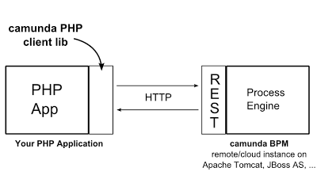

The Camunda BPM PHP SDK enables PHP developers to easily integrate the camunda BPM process solutions into their projects.
The fastest way to get started with the SDK is to download the full github repository as zip and extract the camundaRestClient.php from main/sdk/camundaRestClient.php to your project folder and include it via:
include_once('camundaRestClient.php');
After the inclusion of camundaRestClient.php you can instantiate the API and use it to get your requested data. Below is a simple example which shows how to use the API. If you want to know more about the API you can have a look into the sdk's API-Documentation.
In this example we will request all process definitions and output the deployment id of each definition.
$restRequest = new RestRequest('http://localhost:8080/engine-rest');
$processDefinitions = $restRequest->getProcessDefinitions;
foreach($processDefinitions AS $data) {
echo 'Process deployment id: ' . $data->deploymentId . '<br />';
}
Instantiate the rest client (this example uses our prepackaged tomcat release in a local installation):
$restRequest = new RestRequest('http://localhost:8080/engine-rest');
Get all process definitions:
$processDefinitions = $restRequest->getProcessDefinitions();
output the deployment id for each process definition:
foreach($processDefinitions AS $data) {
echo 'Process Deployment ID: ' . . $data->deploymentId . '<br />';
}
The project will provide a client library which authenticates against the REST Api and provide PHP developers with a native API for interacting with the process engine:
While the camunda BPM project stays focused on Java as primary programming language, we believe that it is important to support developers that use other programming languages and give them access to the BPMN 2.0 process engine technology